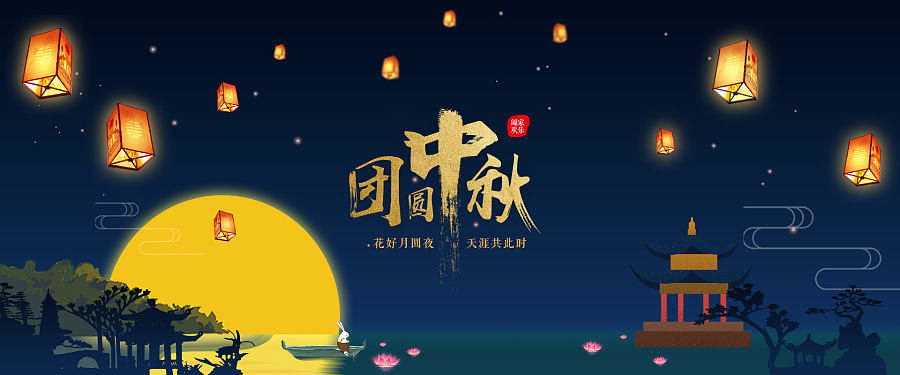
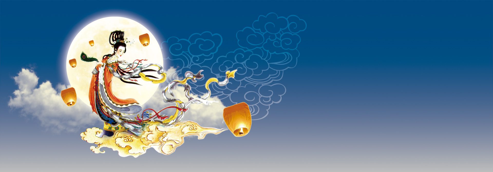

-
中秋节，又称祭月节、月光诞、月夕、秋节、仲秋节、拜月节、月娘节、月亮节、团圆节等，是中国民间的传统节日。中秋节源自天象崇拜，由上古时代秋夕祭月演变而来。最初“祭月节”的节期是在干支历二十四节气“秋分”这天，后来才调至夏历（农历）八月十五，也有些地方将中秋节定在夏历八月十六。中秋节自古便有祭月、赏月、吃月饼、玩花灯、赏桂花、饮桂花酒等民俗，流传至今，经久不息。
中秋节起源于上古时代，普及于汉代，定型于唐朝初年，盛行于宋朝以后。中秋节是秋季时令习俗的综合，其所包含的节俗因素，大都有古老的渊源。中秋节以月之圆兆人之团圆，为寄托思念故乡，思念亲人之情，祈盼丰收、幸福，成为丰富多彩、弥足珍贵的文化遗产。
中秋节与春节、清明节、端午节并称为中国四大传统节日。受中华文化的影响，中秋节也是东亚和东南亚一些国家尤其是当地的华人华侨的传统节日。2006年5月20日，国务院将其列入首批国家级非物质文化遗产名录。自2008年起中秋节被列为国家法定节假日。
-
起源
中秋节是上古天象崇拜——敬月习俗的遗痕。在二十四节气“秋分”时节，是古老的“祭月节”，中秋节则是由传统的“祭月”而来。在传统文化中，月亮和太阳一样，这两个交替出现的天体成了先民崇拜的对象。中秋节庆源自古人对月亮的祭祀，是中华民族祭月习俗的遗存和衍生。祭月，在我国是一种十分古老的习俗，实际上是古时代我国一些地方古人对“月神”的一种崇拜活动。据考证，最初“祭月节”是定在干支历二十四节气“秋分”这天，不过由于历史发展，后来历法融合，使用阴历（夏历），所以将“祭月节”由干支历二十四节气“秋分”调至夏历（农历）八月十五。中秋节是秋季时令习俗的综合，其所包含的节俗因素，大都有古老的渊源。
发展
中秋节源自天象崇拜，由上古时代秋夕祭月演变而来。祭月，历史久远，是古代我国一些地方古人对“月神”的一种崇拜活动，二十四节气的“秋分”，是古老的“祭月节”。中秋节普及于汉代，汉代是我国南北各地的经济文化交流融合时期，各地文化上的交流使节俗融合传播。“中秋”一词现存文字记载最早见于汉代文献，成书于两汉之间的《周礼》（世传为周公旦所著，实际上成书于两汉之间）中说，先秦时期已有“中秋夜迎寒”、“中秋献良裘”、“秋分夕月（拜月）”的活动。据记载，在汉代时，又在中秋或立秋之日敬老、养老，赐以雄粗饼的活动。晋时亦有出现中秋赏月之举的文字记载，不过不太普遍，晋时期中秋节在我国北方地区还不很流行。
中秋节成为官方认定的全国性节日，大约是在唐代。唐代时中秋风俗在我国北方已流行。《唐书·太宗记》记载有“八月十五中秋节”。中秋赏月风俗在唐代的长安一带极盛，许多诗人的名篇中都有咏月的诗句。并将中秋与嫦娥奔月、吴刚伐桂、玉兔捣药、杨贵妃变月神、唐明皇游月宫等神话故事结合起，使之充满浪漫色彩，玩月之风方才大兴。唐代是传统节日习俗揉合定型的重要时期，其主体部分传承至今。
北宋时期，中秋节已经成为普遍的民俗节日，并正式定阴历八月十五为中秋节。文学作品中出现了“小饼如嚼月，中有酥和饴”的节令食品。如孟元老《东京梦华录》说：“中秋夜，贵家结饰台榭，民间争占酒楼玩月”；而且“弦重鼎沸，近内延居民，深夜逢闻笙芋之声，宛如云外。间里儿童，连宵婚戏；夜市骈阗，至于通晓”。
到了明清时，中秋已成为中国民间的主要节日之一。岁时节日中世俗的情趣愈益浓厚，功利性的拜祭、祈求与世俗的情感、愿望构成普通民众中秋节俗的主要形态。明清两朝的赏月活动，“其祭果饼必圆”，各家都要设“月光位”，在月出方向“向月供而拜”。陆启泓《北京岁华记》载：“中秋夜，人家各置月宫符象，符上免如人立；陈瓜果于庭，饼面绘月宫蟾免；男女肃拜烧香，旦而焚之。”《帝京景物略》中也说：“八月十五祭月，其饼必圆，分瓜必牙错，瓣刻如莲花。……其有妇归宁者，是日必返夫家，曰团圆节也。”
中秋节自古就有祭月、赏月、吃月饼、玩花灯、赏桂花、饮桂花酒等习俗，流传至今，经久不息。中秋节时，云稀雾少，月光皎洁明亮，民间除了要举行赏月、祭月、吃月饼祝福团圆等一系列活动，有些地方还有舞草龙、砌宝塔等活动。发展至今，吃月饼已经是我国南北各地过中秋节的必备习俗。除月饼外，各种时令鲜果干果也是中秋夜的美食。
-
祭月
祭月，在我国是一种十分古老的习俗，实际上是古人对“月神”的一种崇拜活动。在古代有“秋暮夕月”的习俗。夕月，即拜祭月神。自古以来，在广东部分地区，人们都有在中秋晚上拜祭月神（拜月娘、拜月光）的习俗。拜月，设大香案，摆上月饼、西瓜、苹果、红枣、李子、葡萄等祭品。在月下，将“月神”牌位放在月亮的那个方向，红烛高燃，全家人依次拜祭月亮，祈求福佑。祭月赏月，托月追思，表达了人们的美好祝愿。祭月作为中秋节重要的祭礼之一，从古代延续至今，逐渐演化为民间的赏月、颂月活动，同时也成为现代人渴望团聚、寄托对生活美好愿望的主要形态。
燃灯
中秋之夜，有燃灯以助月色的风俗。如今湖广一带仍有用瓦片叠塔于塔上燃灯的节俗。江南一带则有制灯船的节俗。近代中秋燃灯之俗更盛。今人周云锦、何湘妃《闲情试说时节事》一文说：“广东张灯最盛，各家于节前十几天，就用竹条扎灯笼。做果品、鸟兽、鱼虫形及‘庆贺中秋’等字样，上糊色纸绘各种颜色。中秋夜灯内燃烛用绳系于竹竿上，高竖于瓦檐或露台上，或用小灯砌成字形或种种形状，挂于家屋高处，俗称‘树中秋’或‘竖中秋’。富贵之家所悬之灯，高可数丈，家人聚于灯下欢饮为乐，平常百姓则竖一旗杆，灯笼两个，也自取其乐。满城灯火不啻琉璃世界。”中秋燃灯之俗其规模似乎仅次于元宵灯节。
赏月
赏月的风俗来源于祭月，严肃的祭祀变成了轻松的欢娱。据说此夜月球距地球最近，月亮最大最圆最亮，所以从古至今都有饮宴赏月的习俗；回娘家的媳妇是日必返夫家，以寓圆满、吉庆之意。民间中秋赏月活动的文字记载出现在魏晋时期，但未成习。到了唐代，中秋赏月、玩月颇为盛行，许多诗人的名篇中都有咏月的诗句。
追月
所谓“追月”，即是过了农历八月十五，兴犹未尽，于是次日的晚上，不少人又邀约亲朋好友，继续赏月，名为“追月”。据清人陈子厚《岭南杂事钞》序云：“粤中好事者，于八月十六夜，集亲朋治酒肴赏月，谓之追月。”
猜谜
中秋月圆夜在公共场所挂着许多灯笼，人们都聚集在一起，猜灯笼身上写的谜语，因为是大多数年轻男女喜爱的活动，同时在这些活动上也传出爱情佳话，因此中秋猜灯谜也被衍生了一种男女相恋的形式。
吃月饼
月饼，又叫月团、丰收饼、宫饼、团圆饼等，是古代中秋祭拜月神的供品。月饼最初是用来祭奉月神的祭品，后来人们逐渐把中秋赏月与品尝月饼，作为家人团圆的一大象征。月饼象征着大团圆，人们把它当作节日食品，用它祭月、赠送亲友。发展至今，吃月饼已经是中国南北各地过中秋节的必备习俗，中秋节这天人们都要吃月饼以示“团圆”。
-
嫦娥奔月
“嫦娥奔月”神话源自古人对星辰的崇拜，嫦娥奔月故事最早出现在《归藏》。后来民间把故事进一步发挥，衍化成多个故事版本。嫦娥登上了月宫，据西汉《淮南子》中说，是因为她偷吃了她丈夫羿从西王母那里要来的不死药，就飞进月宫，变成了捣药的蟾蜍。
玉兔捣药
兔子登上月宫捣药，最早见于屈原的《天问》“厥利维何，而顾、菟在腹？”。意思是说，顾、菟在月亮的肚子里，对月亮有什么好处呢？那兔子又是如何登上月宫的呢？顾就是蟾蜍，菟就是白兔。晋代傅玄的《拟天问》也说：“月中何有，白兔捣药。”据闻一多先生考证，这“白兔捣药”是由“蟾蜍捣药”变来的。
嫦娥身边有只玉兔。据说嫦娥身体变轻，开始升空时，惶恐中抱起了一直喂养的白兔。白兔便随她一起上了月亮。玉兔在月宫有一只捣药杵，夜晚在药臼中捣制长生不老的灵药。这个神话传到日本后，变成了玉兔在捣年糕。
月饼起义
中秋节吃月饼相传始于元代。据说，当时，中原广大人民不堪忍受元朝统治阶级的残酷统治，纷纷起义抗元。朱元璋联合各路反抗力量准备起义。但朝庭官兵搜查的十分严密，传递消息十分困难。军师刘伯温便想出一计策，命令属下把藏有“八月十五夜起义”的纸条藏入饼子里面，再派人分头传送到各地起义军中，通知他们在八月十五日晚上起义响应。到了起义的那天，各路义军一齐响应。
很快，徐达就攻下元大都，起义成功了。消息传来，朱元璋高兴得连忙传下口谕，在即将来临的中秋节，让全体将士与民同乐，并将当年起兵时以秘密传递信息的“月饼”，作为节令糕点赏赐群臣。此后，“月饼”制作越发精细，品种更多。之后中秋节吃月饼的习俗便在民间流传开来。